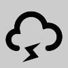

The Stormy Weather Center
"You've Been Thunderstruck"
☰ Menu
Home
Preston
Soda Springs
Fish Haven
Storm Center
Fish Haven
Gallery
Report Severe Weather
Thank you for reporting severe weather in your area.